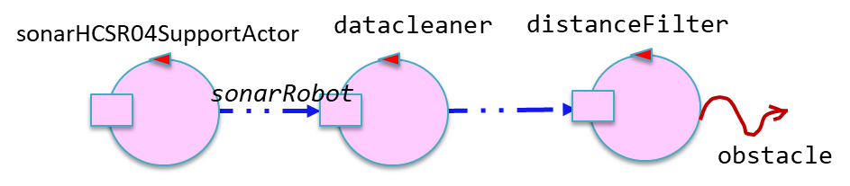

|
Loris Giannatempo 
|
Davide Guidetti 
|
|---|
Progetto finale di ISS, che consiste in un impianto di smistamento dei rifiuti nel quale un robot deve trasportare il materiale dal camion al relativo container
Ulteriori requisiti scaturiti da colloqui con committente:
Scrum goal: obiettivo dello SPRINT2 è la creazione di una seconda demo (su ambiente virtuale) che, partendo dalla demo sviluppata tramite lo SPRINT1, implementi i warning devices e gli alarm devices (l'entità led e l'entità sonar).
Piano di lavoro:
Il committente fornisce già del software per relativo al led in it.unibo.radarSystem22.domain
Il committente fornisce già del software relativo al sonar in unibo.basicrobot22, it.unibo.radarSystem22.domain, unibo.sonarqak22
Formalizziamo il sonar con un attore QAK. In particolare nel progetto unibo.sonarqak22 esiste un attore sonarqak22 in grado di emettere eventi in base alla distanza rilevata da sonar reale o simulato:
Dispatch sonaractivate : info(ARG)
Dispatch sonardeactivate : info(ARG)
Event sonar : distance( V ) //emitted by sonarSimulator or sonardatasource
I comandi sonaractivate e sonardeactivate servono rispettivamente per attivare e disattivare il sonar, mentre l'evento sonar viene emesso o da sonarsimulator, o da sonardatasource e inviato al prossimo attore della pipe. La pipe può essere configurata nel seguente modo:
if( simulate ) firstActorInPipe = sysUtil.getActor("sonarsimulator")!! //generates simulated data
else firstActorInPipe = sysUtil.getActor("sonardatasource")!! //generates REAL data
firstActorInPipe.
subscribeLocalActor("datacleaner"). //removes 'wrong' data''
//subscribeLocalActor("datalogger"). //logs (shows) the data generated by the sonar
//subscribeLocalActor("sonar"). //handles sonarrobot but does not propagate ...
//subscribeLocalActor("distancefilter"). //propagates the lcoal stream event obstacle
subscribeLocalActor(sonarActorName)
In particolare l'attore distancefilter si occupa di filtrare gli eventi e inviare al prossimo attore solo eventi di tipo obstacle:obstacle($distance) solo nel caso in cui la distanza rilevata sia minore di una distanza prefissata.
val DLIMIT : Float
|
Loris Giannatempo
|
Davide Guidetti
|
|---|